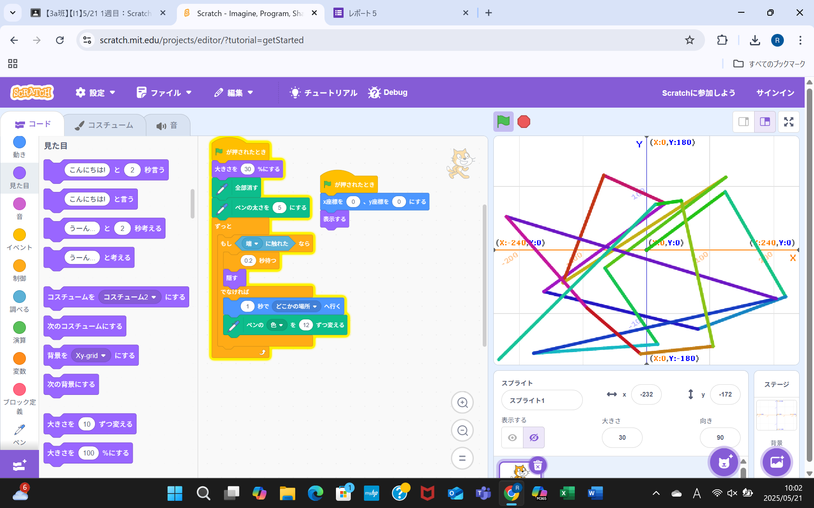
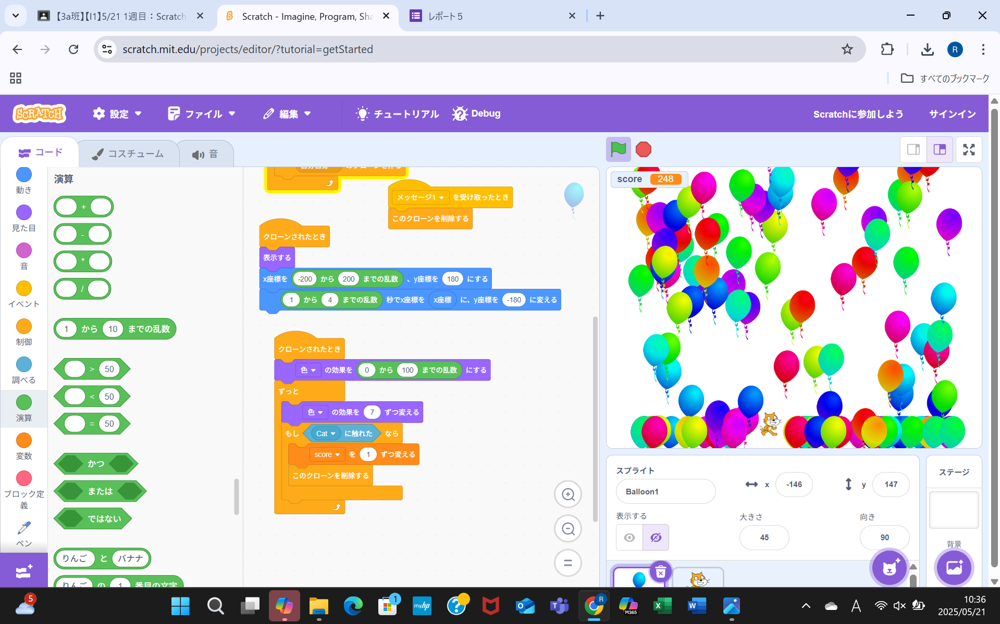

1週目のレポート ： 公大高専１年実習I-1
3a班11番 岡田凰希
第1週目
1-1 サイエンスアート

1.内容
スクラッチのペン機能を使ってラインアートを作成した。ペンの色を変更してみたり、ペンの太さを太くしたりしてオリジナルプログラムを作成した。
2.感想
何をどうしたらラインアートっぽくなるかを考えてプログラムしなければならないので、難しいなと思ったが、プログラムすることは楽しかった。
1-2 ゲーム

1.内容
リンゴからバルーンに変更し、スクラッチのバルーンのクローンを作ることによって数を増やし、より簡潔にプログラムした。
2.感想
頭の中で考えていたアイデアをスクラッチのブロックで動かしていくことが面白いと感じた。
また、スクラッチは誰でもプログラムすることができるので、初心者におすすめだなと思った。
1-3 ホームページ作成
私のホームページ
1.内容
githubで作った土井先生のホームページをフォークしてプログラムを変えて、趣味や特徴を自分の自己紹介ページに書き換えた。。
2.感想
この課題は短かったからできたが、プログラム量が多ければ自分のホームページを作れなかったと思った。
githubのプログラムで英語で書いてあるものはどういう意味か分からなかった。
各ページへのリンク
1週目のレポート
2週目のレポート
3週目のレポート
私のホームページ